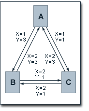
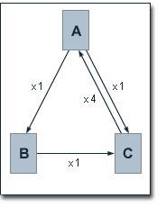
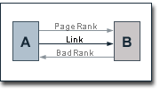
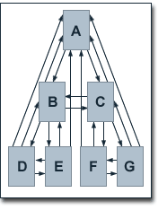

Google的PageRank算法学习(3)
继续学习。
1、很多针对搜索引擎做网站优化的专家，认为google给一些特殊站点以特定的级别而不是按前述算法进行计算，这些网站的级别很有可能来在Yahoo或ODP(Open Directory Project)。Lawrence Page在他们的专利说明中，提到随机冲浪模型中，用记不愿继续点击时，很有可能借助Yahoo的目录或ODP到另一个站点去。
由于前述的算法，无论初始的级别值如何，经过足够次数的迭代最终结果都是一样的，所以对这些特殊站点可能采用下述的公式。
PR(A) = E(A) (1-d) + d (PR(T1)/C(T1) + ... + PR(Tn)/C(Tn))
从另一个角度来看，如果给页面赋一个跟其实际级别相近的初始值，可以明显减少迭代次数。
2、影响页面级别的其它因素
在Lawrence Page和Sergey Brin关于PageRank的论文发表以后，除了web的链接结构以外，还有没有别的因素被加到PageRank的算法当中曾经有过广泛地讨论。Lawrence Page本人在PageRank的专利说明中曾指出以下潜在的影响因素：链接的能见度，链接在文档中的位置，web页面间的距离，出链页面的重要性，页面的不过时。这此因素的增加，可以更好用随机冲浪模型模拟人类利用web的行为。
不管上述附加因素有没有在实际计算PageRank时使用，如何实现这些附加因素仍要讨论。
首先算法公式需要改进.
PR(A) = (1-d) + d (PR(T1)×L(T1,A) + ... + PR(Tn)×L(Tn,A))
此处，L(T1,A)是入链的评价值，由几个因素构成，只需要在迭代前计算一次，减少了对数据库的查询次数，虽然每次迭代的查询结果会有不同。

Lawrence Page在PageRank的专利说明中指出链接评价的两个因素是链接的可见性和在文档中的位置。链接评价取代了PR(A)/C(A)，指出了对一特定的页面的链接，每个链接被点击的概率是不同的。
此处，每一链接有两个属性值，X表示可见度，如果没有被重点强调（如粗体、斜体等）为1否则为2，Y表链接在文档中的位置，如果在文档下半部为1否则为3。则有
X(A,B) × Y(A,B) = 1 × 3 = 3
X(A,C) × Y(A,C) = 1 × 1 = 1
X(B,A) × Y(B,A) = 2 × 3 = 6
X(B,C) × Y(B,C) = 2 × 1 = 2
X(C,A) × Y(C,A) = 2 × 3 = 6
X(C,B) × Y(C,B) = 2 × 1 = 2
易得：
Z(A) = X(A,B) × Y(A,B) + X(A,C) × Y(A,C) = 4
Z(B) = X(B,A) × Y(B,A) + X(B,C) × Y(B,C) = 8
Z(C) = X(C,A) × Y(C,A) + X(C,B) × Y(C,B) = 8
链接评价公式为：（页面T1指向T2）
L(T1,T2) = X(T1,T2) × Y(T1,T2) / Z(T1)
有：
L(A,B) = 0.75
L(A,C) = 0.25
L(B,A) = 0.75
L(B,C) = 0.25
L(C,A) = 0.75
L(C,B) = 0.25
最后利用改进的公式计算页面级别：
PR(A) = 0.5 + 0.5 (0.75 PR(B) + 0.75 PR(C))
PR(B) = 0.5 + 0.5 (0.75 PR(A) + 0.25 PR(C))
PR(C) = 0.5 + 0.5 (0.25 PR(A) + 0.25 PR(B))
得：
PR(A) = 819/693
PR(B) = 721/693
PR(C) = 539/693
为了防止人为的级别优化，页面的距离被用来影响链接的评价。站内链接的权重小于站间链接的权重。页面的距离可能由页面是否在一个站内、一个服务器及物理距离等决定。
另一个影响页面重要性的能参数，是页面的不过时性（up-to-dateness），意指有越多的新建的页面指向某一个页面，则这个页面内容过时的可能性越小。
为增加这些因素的影响，要对公式进行修订如下：
L(Ti,A) = K(Ti,A) × K1(Ti) × ... × Km(Ti)
其中，K(Ti,A)表示链接可见度及位置的权重，Kn(Ti)是第n个因素对页面Ti的影响。看列子：此处，从C引出的链接的重要性是其它的4倍。
K(A) = 0.5
K(B) = 0.5
K(C) = 2
计算级别值：
PR(A) = 0.5 + 0.5 × 2 PR(C)
PR(B) = 0.5 + 0.5 × 0.5 × 0.5 PR(A)
PR(C) = 0.5 + 0.5 (0.5 PR(B) + 0.5 × 0.5 PR(A))
得：
PR(A) = 4/3
PR(B) = 2/3
PR(C) = 5/6
此时，所有页面的级别之和不等于页面数量。
3、基于主题或标题的搜索评级，因google没有采用，略去不看。
4、Google的PR0惩罚
Google对采用了搜索优化的网站的一种惩罚就是，把这个站的所有或很多网页的网页级别定为0，典型的表现就是原先不为0忽然变为0的情况。当然，PR为0不一定是受到了惩罚，可能只是因为没有重要页面链到它。
一个Google的员工在WebmasterWorld's Google News论坛上一再提醒网站管理员，一定不要“链接到坏邻居”。Raph Levien提出了一种技术分析链接结构获取页面的负面特征，与"PageRank"相似但目标相反，名之为“BadRank”。
 BadRank基于“链到坏邻居”，对BadRank有影响显然是出链，因为对PageRank的算法加以改动，即会适合BadRank的计算。
BR(A) = E(A) (1-d) + d (BR(T1)/C(T1) + ... + BR(Tn)/C(Tn))
,其中，BR(A) 是页面A的BadRank, BR(Ti)页面Ti的BadRank,页面A有链接到Ti,C(Ti)页面Ti的入链数，d是阻尼系数，E(A)表示当前页面有没有被垃圾网页过滤系统检测到。当E(A)为0时，这个公式不再有意义，它只是变成了另一种分析链接结构的方法而已。所有页面的E(A)之和等页面总数。看例子,令E(A)=100,其它的为1，d=0.85,则有
| Page | BadRank |
| A | 22.39 |
| B/C | 17.39 |
| D/E/F/G | 12.21 |
可见页面A的BadRank被分布到每个页面中了。
上例中，如果所有页面的BadRank都为1，阻尼系数为0.85,页面G链到一个页面X，E(X)=10，且这个链接是X的唯一的入链。则有
| Page | BadRank |
| A | 4.82 |
| B | 7.50 |
| C | 14.50 |
| D | 4.22 |
| E | 4.22 |
| F | 11.22 |
| G | 17.18 |
在这种情况下，所有页面的BadRank都有增加，A增加得比较少。
常见这样的网站，主页的pagerank在2－4之间，而其它页面为0，这是可能由于受到了Google的惩罚，或者可能只是低层页面有链接到“坏邻居”。（真是这样吗？我的网站就如所述。可怕）。
如果将BadRank和PageRank结合，有多方法，一是相减，一是相除，一是BadRank到了一定值就PageRank=0,等等。其实，两者如何结合并不重要。但是其后果却值得重视。一种情况是，一个页面的PageRank很高，它的BadRank也不低但相对于其PageRank却可以忽略，那么如果一个链向这个页面但PageRank不高的页面将会深受其害了。另一种情况更严重，无论有多少入链帮助增加PageRank，一个到“坏邻居”的出链就可能导致PR0。对于后一种情况，Google的Matt Cutt发言说，一个到“坏邻居”的链接并不会造成伤害，但如果有20，就是个问题了。对于一高一低两个PageRank的页面，都连到一个“坏邻居”,低PageRank的页面受到的伤害会更厉害，只喜欢Google能区别这种情况，否则出链就只有坏处而不见什么好处了。
上述关于PRO的内容，都是关于BadRank的思考，但是对链接结构进行同PageRank相似的分析来确定BadRank似乎是Google的唯一的思路。
Google的PageRank算法学习(2)
Posted by Hilton at August 31, 2003 08:40 PM
| TrackBack